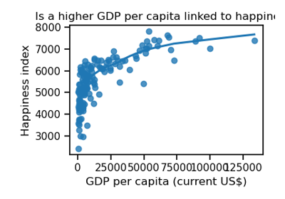

skrub.datasets.fetch_world_bank_indicator#
- skrub.datasets.fetch_world_bank_indicator(indicator_id, load_dataframe=True, directory=None)[source]#
Fetches a dataset of an indicator from the World Bank open data platform.
- Description of the dataset:
The dataset contains two columns: the indicator value and the country names. A list of all available indicators can be found at https://data.worldbank.org/indicator.
- Returns:
DatasetAllIf load_dataframe=True
DatasetInfoOnlyIf load_dataframe=False
Examples using skrub.datasets.fetch_world_bank_indicator#

Fuzzy joining dirty tables and the FeatureAugmenter
Fuzzy joining dirty tables and the FeatureAugmenter